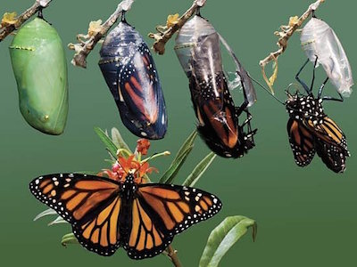

Once upon a time there were two entrepreneurs.
One was a little spider, the other a bright green caterpillar. The spider built a little web between two branches of an old willow tree. The caterpillar chose a large patch of big, broad leaves that provided shelter from the rain and birds.
As long as there was more food to catch, the spider continued to spin. Expanding here, retreating a little there. The spider’s domain grew and shifted nimbly with the market inside the forest.
The caterpillar had bigger plans than the spider. Much bigger. The caterpillar dreamt of building an enterprise beyond the forest into the wide, wide world. A bold vision indeed. Perhaps too bold, for the little caterpillar's domain grew no further than the big patch of leaves.
Frustrated, the caterpillar ventured into the valley below, where the leaves were bigger and greener than in the forest. Here the caterpillar ate and ate, listening to stories of others who achieved their dreams. One day, with a bulging belly full of green, the caterpillar signed a lease on a spacious cocoon and crawled inside.
Right away things began to change. Old arrangements were cast aside. New structures rose in their place. Short, stubby feet became long, graceful legs. Chewing jaws became a supple straw. Huge eyes. And the wings, such magnificent wings! The caterpillar became unrecognizable. A new creation for a grand vision. The cocoon under the leaf split open and out stepped a big, beautiful butterfly. With a nod and shake the butterfly took to the skies. The land of new opportunities was finally within reach.
Both the spider and the butterfly lived happily ever after.
The spider was content to grow organically within a chosen niche. The caterpillar sought an expansive enterprise. Both approaches can result in success or failure.
There are Riches in the Niches
For the spider aiming to thrive in the forest, agility and tight focus are key. When a new source of food comes along, the spider is right there, spinning more web. If the swarms move on, the spider abandons the web and finds a more vibrant locale. The spider is self-contained—always prepared to move quickly. A master at avoiding trouble and taking advantage of changing conditions. So long as the forest stands, the spider readily adapts to any changes or turmoil within its domain.
But Also There Are Ditches
If the forest one day became a parking lot, the spider is doomed. Specialization can lead to success, but choose your niche wisely. A fallen log provides a bounty to termites until the last of the wood is eaten and then they starve. Conversely, the granite walls of a deep cave provide sources of food and shelter far into the future — the mountain itself would come down before the bounty ended. What sort of niche are you betting your future on?
Before You Dare, You Must Prepare
Once the caterpillar achieves butterfly scale, no stand of trees or particular flowerbed is critical to survival. But the path to a successful transformation is narrow and perilous.
Some teams expand without fundamental reorganization. They grow and grow, without making changes to support the added complexity. They remain caterpillars, now bloated and slow. Easy prey.
Some teams start transforming before building a secure base. Poorly anchored, they are vulnerable to market turbulence while soft and goopy inside the cocoon. One bad storm can rip them from the leaf to be dashed against the rocks below.
Then there are those who understand what a butterfly looks like, but make changes ad-hoc without a real systemic shift. They grow a wing. Then three legs. A giant compound eye — all on their plump caterpillar body. They try, but end up hopping around in circles until market forces or frustrated investors put them out of their misery.
To dominate a niche — be a spider. Stay self-contained and nimble. Be focused and agile, with flexible structures and simple repeated patterns. Just keep a few of your eyes out for the chainsaws and bulldozers that might be sneaking up on you.
To become a butterfly, first be an excellent caterpillar. When it is time to fly — plan, prepare, transform.
What will your story be?
Originally posted at ExitEvent